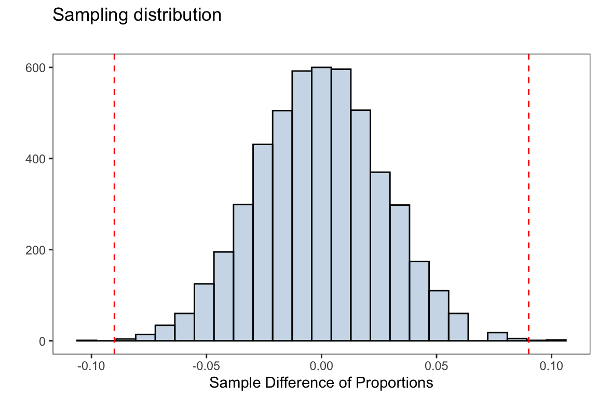

library(openintro)
library(mosaic)
library(ggplot2)Simulation-Based Test of Significance
Required Packages
theme_set(theme_bw())
theme_replace(panel.grid.minor = element_blank(),
panel.grid.major = element_blank())Comparing two proportions
From the openintro package we consider the sten30 dataset. An experiment that studies effectiveness of stents in treating patients at risk of stroke with some unexpected results, this dataset represent the results 30 days after stroke
stent30 <- openintro::stent30#> Rows: 451
#> Columns: 2
#> $ group <fct> treatment, treatment, treatment, treatment, treatment, treatme…
#> $ outcome <fct> stroke, stroke, stroke, stroke, stroke, stroke, stroke, stroke…We are interesting in testing if the probability of having a stroke is different for those in the control and treatment group. The null and alternative hypotheses are given by \[ \begin{align*} H_0: \pi_1 &= \pi_2 \\[5pt] H_a: \pi_1 &\neq \pi_2 \end{align*} \]
observed_tbl <- tally(outcome~group,data=stent30 ,format='proportion')The observed statistic is the difference in proportion of individuals who did get a stroke under the treatment and control groups
observed_diff <- observed_tbl['stroke','treatment'] - observed_tbl['stroke','control']observed_diff#> [1] 0.09005271Below is a for loop that will simulate the null distribution for our test statistic we will use to test our hypothesis
set.seed(234)
iters <- 5000
diff_proportions <- numeric(iters)
for(i in 1:iters){
group_shuffle_i <- sample(stent30$group)
cond_props_i <- tally(stent30$outcome~group_shuffle_i,format = 'proportion')
diff_proportions[i] <- cond_props_i['stroke','treatment'] - cond_props_i['stroke','control']
}Show Code
sampling_dist <- ggplot(data.frame(diff_proportions),
aes(diff_proportions))+
geom_histogram(fill = 'steelblue',alpha = 0.3,
color = 'black',bins=25)+
geom_vline(xintercept = observed_diff,linetype = 2,
color ='red')+
geom_vline(xintercept = -observed_diff,linetype = 2,
color ='red')+
labs(title = 'Sampling distribution',
subtitle = '',
x = 'Sample Difference of Proportions',y = '')
Using our null distribution, we can decide on the strength of evidence for or against the null hypothesis. The simulation-based \(p\)-value is then computed as
mean(abs(diff_proportions) >= observed_diff)#> [1] 8e-04Using a significance level of \(\alpha=0.05\), we have enough evidence in favor of the alternative hypothesis. That is, we reject the null hypothesis and suggest there is a difference in proportions of patients getting a stroke under the control and treatment group.